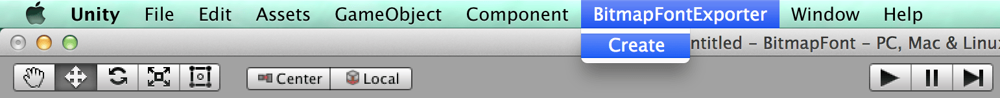
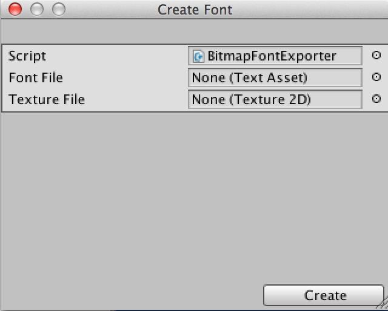
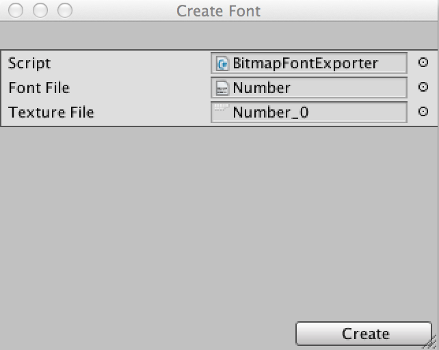
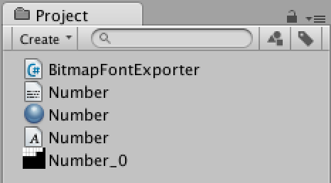
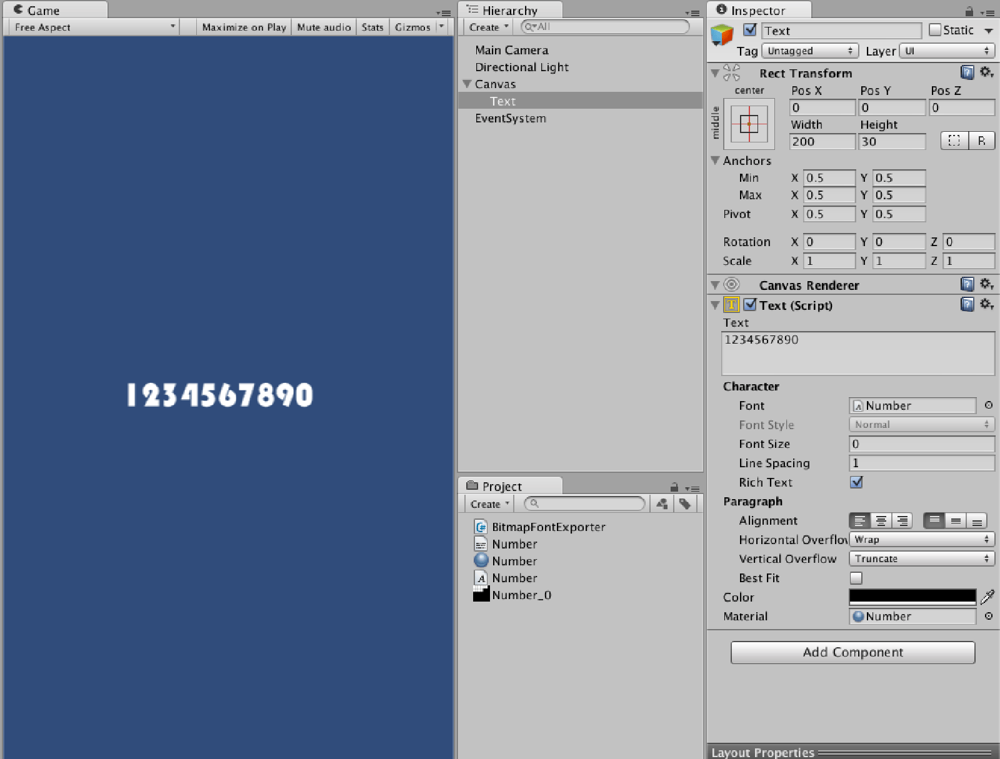

在 NGUI 中，可以利用 Font Maker 來建立自定義字型
詳細流程請看
【Unity】【NGUI】- NGUI 系列教學( 六 ) 使用 NGUI Font Maker 建立自定義字型
但在 uGUI 裡，若我們需要使用自定義字型
需要建立 Custom Font 並手動輸入相關數據
為了方便在這邊寫了一個小工具
用來讀取 .fnt 檔，自動產生 Custom Font
這裡使用的 fnt 檔為 XML 格式
這邊使用的自定義字型來自
【Unity】【NGUI】- NGUI 系列教學( 五 ) 利用 BMFont 建立自定義字型
解析腳本如下
using UnityEngine;
using UnityEditor;
using System.IO;
using System.Xml;
using System;
public class BitmapFontExporter : ScriptableWizard
{
[MenuItem("BitmapFontExporter/Create")]
private static void CreateFont()
{
ScriptableWizard.DisplayWizard<BitmapFontExporter>("Create Font");
}
public TextAsset fontFile;
public Texture2D textureFile;
private void OnWizardCreate()
{
if(fontFile == null || textureFile == null)
{
return;
}
string path = EditorUtility.SaveFilePanelInProject("Save Font", fontFile.name, "", "");
if(!string.IsNullOrEmpty(path))
{
ResolveFont(path);
}
}
private void ResolveFont(string exportPath)
{
if (!fontFile) throw new UnityException(fontFile.name + "is not a valid font-xml file");
Font font = new Font();
XmlDocument xml = new XmlDocument();
xml.LoadXml(fontFile.text);
XmlNode info = xml.GetElementsByTagName("info")[0];
XmlNodeList chars = xml.GetElementsByTagName("chars") [0].ChildNodes;
CharacterInfo[] charInfos = new CharacterInfo[chars.Count];
for (int cnt = 0; cnt < chars.Count; cnt++)
{
XmlNode node = chars[cnt];
CharacterInfo charInfo = new CharacterInfo();
charInfo.index = ToInt(node, "id");
charInfo.width = ToInt(node, "xadvance");
charInfo.uv = GetUV(node);
charInfo.vert = GetVert(node);
charInfos[cnt] = charInfo;
}
Shader shader = Shader.Find("Unlit/Transparent");
Material material = new Material(shader);
material.mainTexture = textureFile;
AssetDatabase.CreateAsset(material, exportPath + ".mat");
font.material = material;
font.name = info.Attributes.GetNamedItem("face").InnerText;
font.characterInfo = charInfos;
AssetDatabase.CreateAsset(font, exportPath + ".fontsettings");
}
private Rect GetUV(XmlNode node)
{
Rect uv = new Rect();
uv.x = ToFloat(node, "x") / textureFile.width;
uv.y = ToFloat(node, "y") / textureFile.height;
uv.width = ToFloat(node, "width") / textureFile.width;
uv.height = ToFloat(node, "height") / textureFile.height;
uv.y = 1f - uv.y - uv.height;
return uv;
}
private Rect GetVert(XmlNode node)
{
Rect uv = new Rect();
uv.x = ToFloat(node, "xoffset");
uv.y = ToFloat(node, "yoffset");
uv.width = ToFloat(node, "width");
uv.height = ToFloat(node, "height");
uv.y = -uv.y;
uv.height = -uv.height;
return uv;
}
private int ToInt(XmlNode node, string name)
{
return Convert.ToInt32(node.Attributes.GetNamedItem(name).InnerText);
}
private float ToFloat(XmlNode node, string name)
{
return (float)ToInt(node, name);
}
}使用方式：
點選 Toolbar/BitmapFontExporter/Create

接著會產生出一個簡易視窗

將對應的 .fnt 及 png 拉入對應欄位

按下 Create 後可選擇儲存位置
並產生出 Material 及 FontSettings

接著建立一個 uGUI Text
並將產生的 Font 及 Material 拖拉至對應欄位
即可在 uGUI 中使用自定義字型
